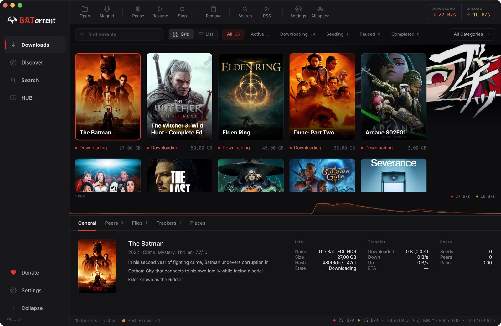
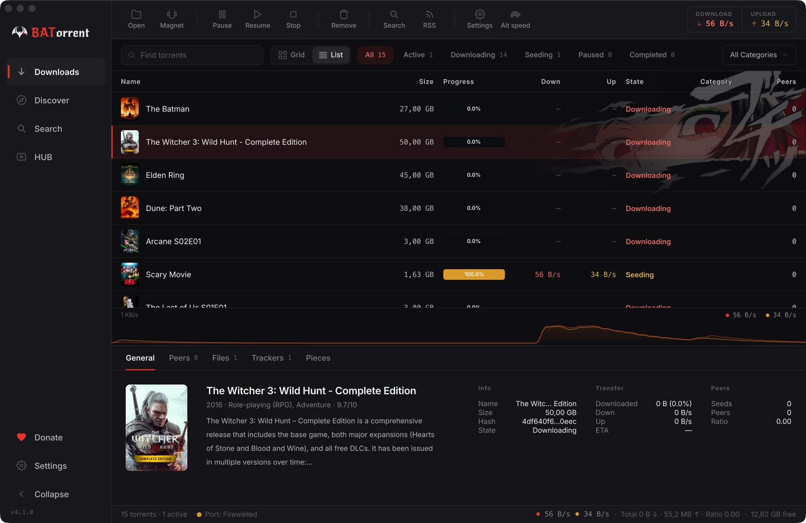
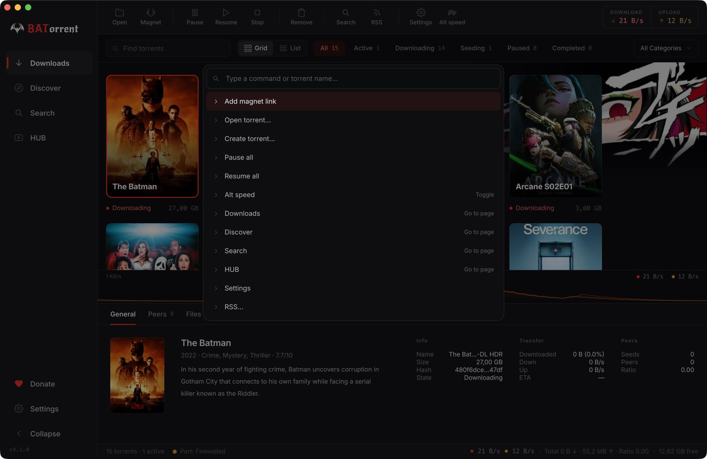
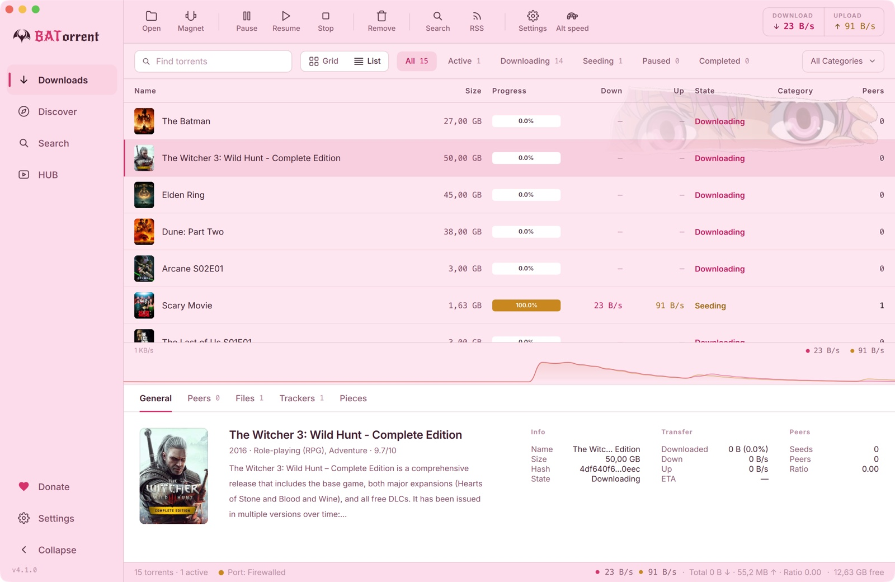

Cover art appears the moment you add a torrent. A built-in player streams while you download — subtitles included. And Ctrl+K does everything else.
BATorrent reads release names — movies, shows, games, even messy anime fansub naming — and pulls the real cover art automatically. A torrent list that looks like a streaming library, because that's what it is.

The built-in player streams from the torrent as pieces arrive, remembers where you stopped, and now finds subtitles for you — load any .srt, or search online sources right from the player. Sync them with one keystroke.

Jump to any torrent by name. Pause everything. Toggle the speed limit. Open any page or window. The command palette makes the whole app one fuzzy search away — no mouse required.

Dark, Light, Midnight, Sakura, Dark Star — or a fully custom theme with your own colors and background image. Optional anime accent art, and an app icon you pick independently of it all.

No telemetry, no analytics, no phoning home. The only outbound request is the GitHub release check — and it's optional. Built by one developer, in the open, under MIT.
Full power-user parity — none of it traded away for the looks.
Latest release, straight from GitHub. Also published as web-seeded torrents — of course.
Unreliable connection to GitHub? Every asset is also published as a web-seeded .torrent — a torrent client you can download via torrent.